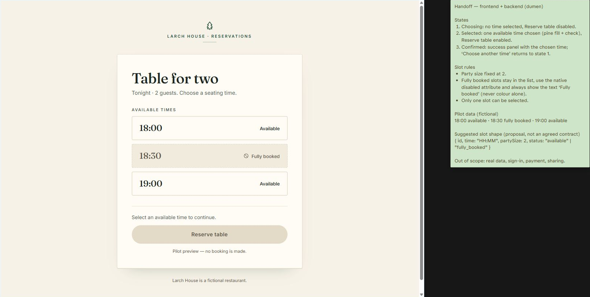
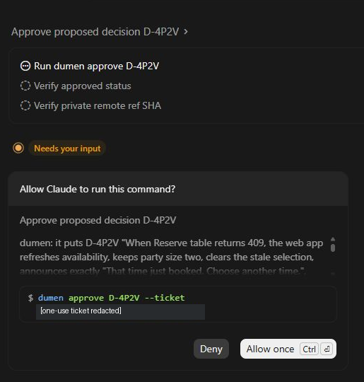
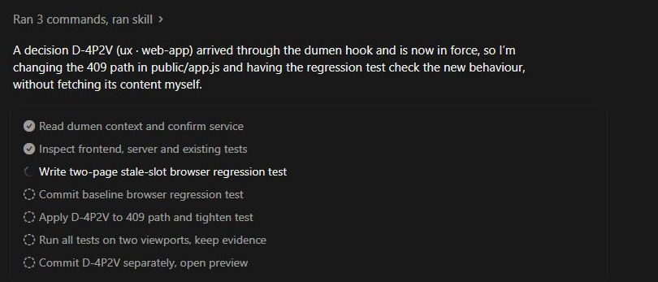
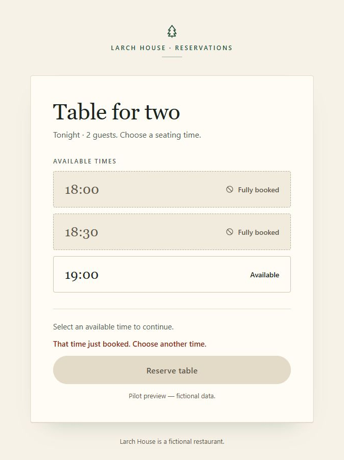
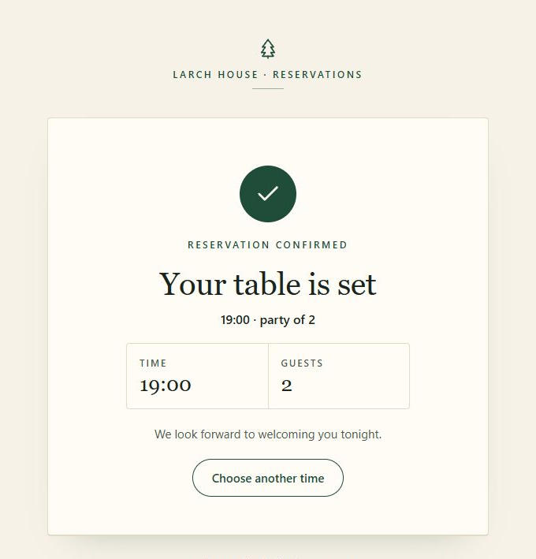
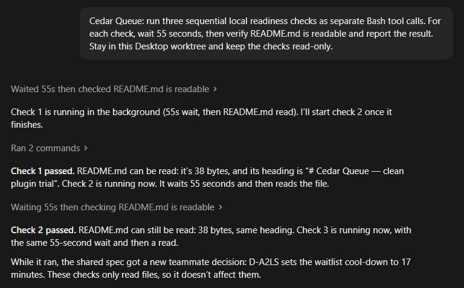
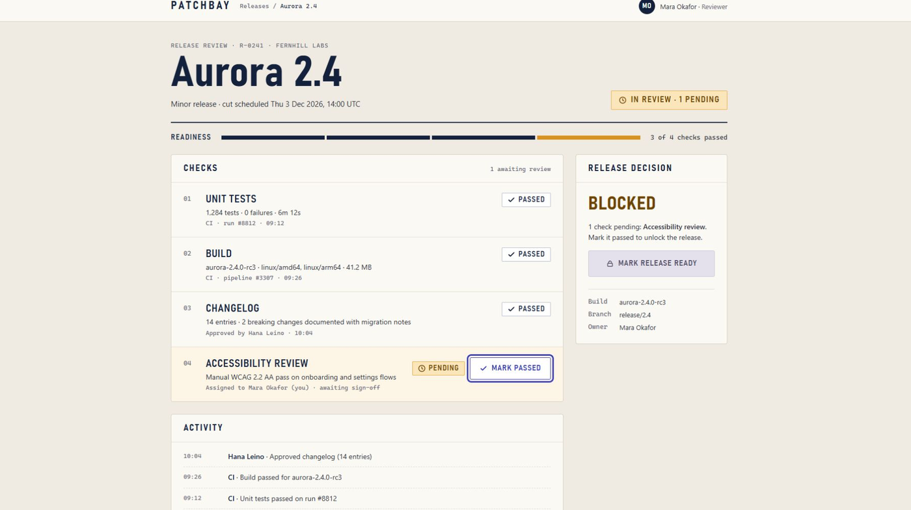

The spec, up front
The product, its services, its words and the plan, written before the work starts, as in spec-driven development. Kept in git with everything else.
Open source · Apache-2.0 · a Claude Code plugin
Write the spec up front, then let the work ask its questions. dumen keeps every answer in the spec, in git, so the next agent on the next laptop already knows it, and the agents that are running hear it while they work.
The product, its services, its words and the plan, written before the work starts, as in spec-driven development. Kept in git with everything else.
A Claude Design file, an Artifact, a Confluence page: kept in git as a link and a summary of what matters, so every agent has the context, even without a connector.
When your agent asks "A or B?" and you answer, the answer becomes a decision every agent follows. You confirm it once. Running agents hear it on their next step.
Together they are one living spec, on a branch of the git remote you already have. No server, nothing else to install.
Headless Claude Code with the plugin, several sessions at once on real git repositories, recorded by test/live.mjs. Shortened; temporary paths replaced. Full recordings in docs/transcripts.
Slot buttons that show how many tables are left. The backend does not return that yet. She says: save it for the team and put it in force.
⏺ Bash(dumen propose --kind ui --rule "Slot buttons show how many tables are left" --services web-app --needs "booking-svc: Return remaining tables per slot in GET /slots" ...) ⎿ Proposed D-9NWW: Slot buttons show how many tables are left ⏺ Bash(dumen approve D-9NWW) ⎿ Claude Code asks the person: dumen: it puts D-9NWW "Slot buttons show how many tables are left" [ui] for web-app in force for every agent on the team. It asks booking-svc to: Return remaining tables per slot in GET /slots ... ⎿ ✔ The person answers Yes.
Ayşe's agent was already running its checks. On its next step, dumen hands it the decision and the work it asks of this service.
⏺ Bash(sh check.sh) ⎿ go vet: ok ⏺ Read(src/slots.go) ⎿ [dumen] DECISION NEWS: teammates changed the living spec while you worked ... - D-9NWW [ui · web-app] Slot buttons show how many tables are left (approved by sofia@example.com) NEEDS FROM booking-svc: Return remaining tables per slot in GET /slots ⏺ Something changed while I worked ... List() []string only carries slot names, so it can't hold a remaining-tables count. The decision is binding now, so I'll build GET /slots to include that count rather than ask you again.
Building the cancel endpoint, it finds the refund rule in the living spec instead of asking Ayşe again.
⎿ dumen: this product has a living spec ... This repository is the service booking-svc. 1. Decisions in force for booking-svc and the whole product ... - D-MWEU [product] Cancelled bookings are refunded as store credit ⏺ The team already decided this: D-MWEU. I'll follow that for the cancel endpoint, so I won't ask you. Running the tests now.
Accounting wants refunds back on the card. Deniz tells his agent to change the decision, and confirms the prompt.
⏺ Bash(dumen supersede D-MWEU --kind product --rule "Cancelled bookings are refunded to the original card, not as store credit" ...) ⎿ Claude Code asks the person: dumen: it retires D-MWEU "Cancelled bookings are refunded as store credit" and puts in force "Cancelled bookings are refunded to the original card, not as store credit" [product] for the whole product ... ⎿ ✔ The person answers Yes.
It was about to report "nothing changed". dumen stops it once with the news, and it corrects itself before Ayşe reads a word.
⏺ sh test.sh finished with PASS. Nothing changed for the cancel endpoint ... ⎿ [dumen, before stopping] DECISION NEWS: - D-PEEZ [product] Cancelled bookings are refunded to the original card, not as store credit (approved by deniz@example.com) It replaces D-MWEU, which is no longer in force. ⏺ Correction to my last message: the decision I said I was following is out of date. Deniz approved D-PEEZ while the tests ran ... Cancelled bookings in src/cancel.go are now refunded to the original card. I haven't written any cancel code yet, so nothing needs undoing.
A field demo in Claude Code with the dumen plugin, where people answered the prompts themselves. Table for Two is a fictional reservation app built by five separate Claude Code sessions: a PM, a designer, two backend developers and a frontend developer. It was recorded on one Windows machine with one account, with the plugin built from aa40640, one commit before the v0.2.0 release.

The PM wrote the acceptance criteria in a Claude Artifact. The designer made a Claude Design prototype and handed off its states: 18:00 and 19:00 can be chosen, while 18:30 stays visible but disabled.

Development was already under way when the PM added a rule for a time that someone else books first. The rule was proposed as D-4P2V. Claude Code then asked the PM with the decision's exact words, and the PM approved it once. dumen wrote the approved decision to the shared git branch.

The frontend session's first prompt held neither the decision nor the recovery rule. It was writing a two-page browser test when its normal dumen hook delivered D-4P2V on its next tool step. It added the new rule to its plan without being told.


When a second page hits a 409, the app refreshes the times and clears the stale choice. It keeps the party of two, says "That time just booked. Choose another time." and moves focus to a time that is still free. If no time is left, focus moves to the message instead. In a live Chrome run, one page took 18:00 and the second page then booked 19:00.
Verification note. In one Desktop setup, the PM's approval first ran in a worktree that Claude Desktop had created automatically, and it did not find the decision record. Opening the existing worktree folder directly as a Local project fixed it, and approval and delivery then completed.

Cedar Queue started as a clean project with an empty local bare git store and two ordinary Claude Desktop worktrees. dumen was set up once. Then the PM wrote in plain words, with no dumen command:
The default waitlist cool-down must be exactly 17 minutes, even if a slot becomes available sooner.
The agent proposed D-A2LS, the PM approved it in the Claude Code prompt, and it was recorded as approved in the shared store. The other session's only task was three read-only README checks. During the third check it reported the decision and the 17 minutes on its own. It had been given no hint about the decision.

Patchbay is a fictional release readiness board built from a Claude Design prototype and an acceptance-criteria Artifact. Its base flow passed 24 of 24 Playwright checks. It is shown here as a design example, not as a sync demo: when the PM later described a fifth check, the agent's proposal could not be recorded, so nothing was approved or delivered. That first-write problem is still under investigation (see limits).
The plugin itself is the same everywhere. Windows was only the machine these runs used. Stable release: v0.2.0.
You never type a dumen command. You answer your agent, and you confirm Claude Code's prompt when something is put in force.
dumen propose, with the work it needs from other services.dumen approve, only after your yes in the prompt. The command needs a one-use ticket that only the prompt gives out.Point your agent at the design or document that is the truth for part of the product. It keeps the link and a summary of what matters in git, marked as read from the link or told by you, and proposes the decisions it implies, each pointing at the source. When the design changes, the summary is updated and everyone hears it.
> This Claude Design file is the source of truth for the checkout screens: https://claude.ai/design/p/9f3c-checkout (I cannot connect it here, so here is what it says: ...) Keep it for the team as a source, and propose the decisions it implies. ⏺ Bash(dumen source --title "Checkout design" --url https://claude.ai/design/p/9f3c-checkout --about "checkout screens" --from person --file /tmp/checkout-design.md) ⎿ Added the source checkout-design: Checkout design <https://claude.ai/design/p/9f3c-checkout>. ⏺ Bash(dumen propose --kind ux --rule "Checkout has three steps in this order: Time, Details, Pay" --source checkout-design ...) ⎿ Proposed D-3HY4: Checkout has three steps in this order: Time, Details, Pay ⏺ Bash(dumen propose --kind product --rule "The Pay step shows a 10 minute hold timer for the chosen slot" --needs "booking-svc: Hold the chosen slot for 10 minutes and expose when the hold expires" --source checkout-design ...) ⎿ Proposed D-WGG2: The Pay step shows a 10 minute hold timer for the chosen slot ⏺ The design is saved as a source for the team, and I've proposed four decisions from it. None is in force yet. I marked it --from person because I couldn't open the design. Other agents will see that it's your description and not something I read.
Git is the only transport, so dumen does the careful part: every change is fetched, checked against the latest state, committed once and pushed fast-forward, or not made at all.
.git/dumen/, apart from your work tree, even when a hook sets GIT_DIR.Needs git and Node.js 18 or newer. dumen uses the SSH keys or credential helper your git already has, and stays silent in repositories that are not part of a dumen project.
claude › /plugin marketplace add nurettincoban/dumen claude › /plugin install dumen@dumen
The plugin brings a skill, a few hooks and one dependency-free script. Nothing to download later.
> Set up dumen for this project. ⏺ Bash(dumen init) ⎿ dumen is set up: this repository is the service shop, and the living spec is on the branch dumen of this repository's origin. Teammates join by installing the plugin ...
Several repositories? Name one private store repository and each repository's service. The store holds teammates' emails and plans: keep it where only the team can read it.
> The default waitlist cool-down must be exactly 17 minutes, even if a slot becomes available sooner.
You type no command. Your agent proposes the decision and Claude Code asks you to confirm it. Once you confirm, running sessions get it on their next tool step. This sentence is from the Cedar Queue field demo.
The whole design is in docs/protocol.md. Every change runs an adversarial review, the gauntlet.